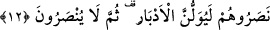

gelecekteki zamanın tamamını kapsayan bir anlam taşımaktadır. Tıpkı ezel kelimesinin
geçmişteki zamanın tamamını kapsayan bir anlam taşıması gibi. Her iki kelime de
gelecek ve geçmişle ilgili çok uzun bir zamanı ifâde etmekte kullanıldıklarından dolayı
bazan çoğullarına izafe edilerek; yâni isim tamlaması yapılarak ebedü’l-âbâd; yâni
“sonsuzların sonsuzu”, ezelü’l-âzâl; yâni “ezellerin ezeli” denir. Sermedî ise hem
geçmiş hem de gelecek zamanların tamamını kapsayan bir kelimedir. Yâni mâzi ve
müstakbelde varlığın sonsuz olarak devam ve istimrar etmesini ifâde etmekte kullanılır.
Senin derdin ezelden gelir ta ebed gününe gider
Bir kimse böyle sermedî bir nimetin şükrünü nasıl edâ eder?
“Eğer savaşa tutuşursanız” yâni Muhammed (s.a.) ve arkadaşları sizinle
savaşırlarsa “mutlaka size yardım ederiz” elbette size yardım eder ve sizi yüzüstü
bırakmayız, derler. “Allah, onların yalancı olduklarına şâhidlik eder.” Yâni yalan
yeminlerle pekiştirilmiş sözlerinde yalancı olduklarına Allah şâhidlik eder.
12. Andolsun, eğer onlar çıkarılsalar, onlarla beraber çıkmazlar; savaşa tutuşmuş
olsalar, onlara yardım etmezler; yardım etseler bile arkalarını dönüp kaçarlar,
sonra kendilerine de yardım edilmez.
“Andolsun, eğer onlar” zorla ve horlanarak “çıkarılsalar, onlarla beraber
çıkmazlar.” Âyet-i kerimenin bu bölümü, her şeyde onları toplu olarak yalanladıktan
sonra, söyledikleri her sözde ayrı ayrı ve açıklamalı olarak yalanlamaktadır.
“Savaşa tutuşmuş olsalar, onlara yardım etmezler.” Nitekim aynen öyle oldu.
Medine’de münâfıkların reisi Übeyy’in oğlu ve arkadaşları gizlice Nadiroğullarına:
“Yerlerinizden çıkmayın, kalelerinizde kalın. Çünkü yanımda benim kabilemden ve
diğer Araplardan oluşan iki bin kişilik bir kuvvet var. Size ulaşılıncaya kadar son
ferdine kadar ölecekler. Kureyzaoğulları ve antlaşmalı bulunduğunuz Gatafanlılar da
size destek verecekler” diye haber gönderdi. Evinde oturup haber gönderen lânetli
münâfıkların reisinin bu sözü Nadiroğullarını ümidlendirdi. İleri gelenlerinden biri olan
Selâm b. Mişkem, kendilerini uyarmak maksadıyla Nadiroğullarının yöneticisi olan
Huyey b. Ahtab’a: “Ey Huyey! Vallahi Übeyy’in oğlunun vaadi elbette yalandır, bâtıldır,
hiçbir kıymeti yoktur. Seni bir tehlikeye düşürmek ve oyuna getirip Muhammed’le
savaştırmak istiyor. Kendisi de evinde oturacak ve seni yüzüstü bırakacaktır” dedi.
Huyey: “Muhammed’le düşman olmak ve onunla savaşmaktan başka bir çare yok” dedi.
Selam b. Mişkem: “Yemin olsun ki, bu kendi topraklarımızdan sürülmek, mallarımızın